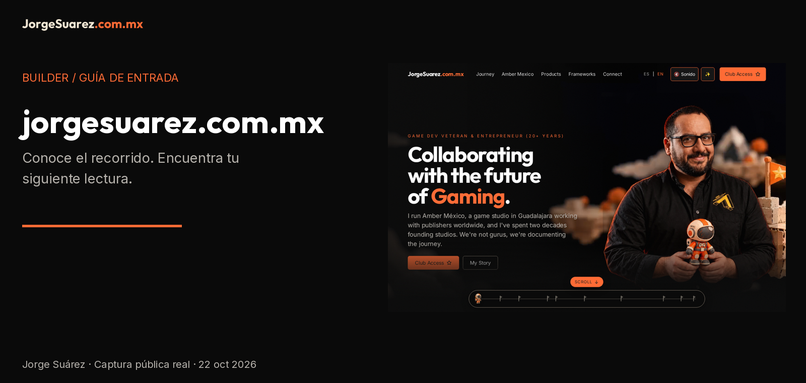

Español | English

jorgesuarez.com.mx
Conoce el recorrido y encuentra el proyecto que te interesa. Abre el sitio y usa la navegación para ir a historia, proyectos o contacto. No necesitas instalar nada.
¿Qué es?
El sitio personal de Jorge Suárez: presenta su recorrido en videojuegos, iniciativas, recursos y vías de contacto. Es una entrada pública a contenidos y enlaces, no una prueba de que todos los servicios externos estén disponibles.
¿Para quién?
Para personas interesadas en videojuegos, emprendimiento y los proyectos públicos de Jorge; también para quienes quieren encontrar una forma de contacto.
¿Por qué existe?
Para reunir historia, proyectos y aprendizajes en un lugar. El README anterior lo describe como un hub de videojuegos, construcción de estudios, comunidad, emprendimiento e IA; no se añaden aquí biografías, clientes ni resultados medidos.
¿Cómo lo uso?
- Visita la página.
- Usa ES / EN para elegir idioma. En la captura pública los rótulos de navegación incluyen Journey, Amber Mexico, Products, Frameworks y Connect; algunos rótulos pueden mantenerse en inglés.
- Ve a Products para explorar proyectos o Connect para encontrar contacto. Revisa las condiciones del destino antes de compartir datos o pagar.
Amber y las demás empresas conservan su identidad: la marca personal del builder no sustituye sus brandkits ni implica autoría o propiedad sobre sus productos.
¿Cuándo conviene y cuándo no?
Úsalo para conocer el recorrido, explorar enlaces y decidir qué consultar después. No lo tomes como un panel de clientes, un contrato, una plataforma de aprendizaje ya demostrada ni un comprobante de disponibilidad de todas las iniciativas.
¿Dónde lo encuentro?
Sitio público · Perfil de proyectos · Brandkit oficial.
Antes de seguir
- Disponibilidad: página pública verificada con HTTP 200 en Chromium el 22 de octubre de 2026. Esto no demuestra qué revisión del repositorio está desplegada.
- Requisitos y ayuda técnica: navegador moderno y conexión. Leer no requiere developer; cambiar o publicar el sitio sí requiere revisión técnica. No se garantiza rendimiento universal en móviles o GPU.
- Costos y licencia: consultar la página no exige pago; ofertas enlazadas pueden tener sus propios costos.
package.json declara UNLICENSED; ver el código no otorga permiso de reutilización. Marca y fotografías no son MIT.
- Privacidad: leer abre conexiones con el sitio y sus recursos; los destinos externos tienen políticas propias. No hemos auditado cookies, almacenamiento ni todos los proveedores. La evidencia no envía formularios ni datos personales.
- Límites: se verificó navegación pública y desplazamiento, no acceso al club, pagos, formularios ni sistemas privados. Las capturas documentan el sitio tal como se observó, no funcionalidad añadida por esta documentación.
- Ayuda: correo público de Jorge o issues del repositorio, sin secretos ni datos de clientes.
Recorrido real

Video con subtítulos y transcripción ES · English captions. Grabación de la página pública, sin envíos ni acceso a cuentas.
Ruta técnica separada
Notas para mantener este repositorio · Guía documental · Aviso de medios.
El README anterior atribuye v2 a un repositorio fuente privado y menciona GitHub Pages detrás de Cloudflare, pero también conserva referencias anteriores a Vercel. No se ha verificado el vínculo entre este checkout, el build servido y el proveedor actual. No uses esas notas como instrucciones de despliegue o rollback. Los registros históricos permanecen intactos.